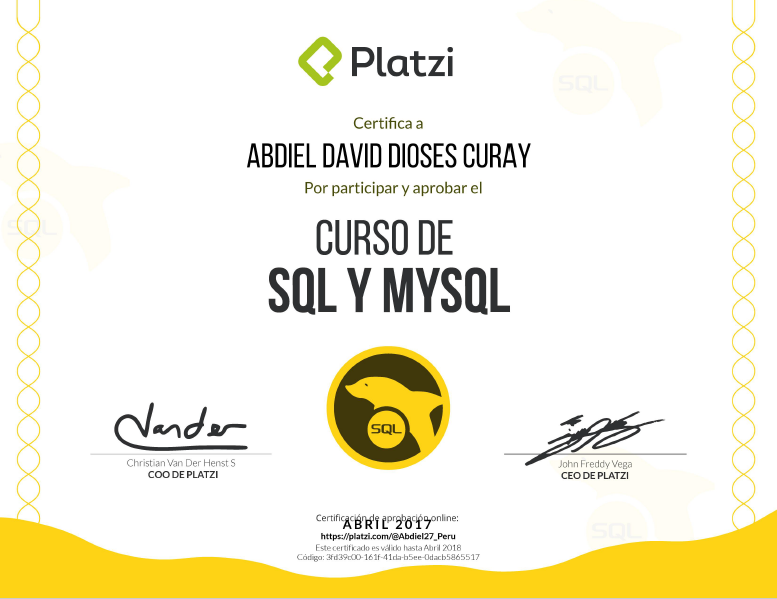
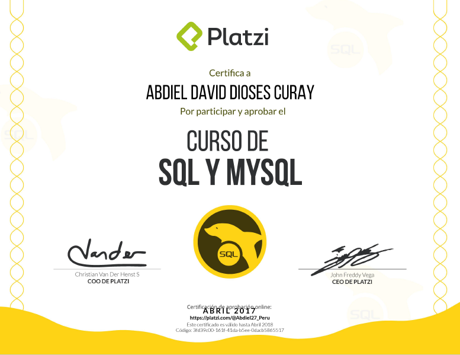

"Hola, soy Abdiel David Dioses Curay, me gusta el sistema de la tecnología y como funcionan las cosas en ella,
soy profesor de computación básica de niveles en inicial (en alumnos de 4 y 5 años), primaria y secundaria. Aunque mi carrera no es
la docencia; sino que soy ´Técnico en Computación e Informática´".
"No me gusta la rutina, por ello no puedo quedarme quieto en una sola cosa, o me hallo trabajando, estudiando o
realizando alguna otra actividad. Actualmente a parte del trabajo, estudio en Platzi.com (una comunidad increíble que esta a la
vanguardia de la tecnología)".
Datos Personales
Nombres: Abdiel David
Apellidos: Dioses Curay
Nacionalidad: Peruana.
Fecha de nacimiento: 14 de Octubre 1989.
Telefono: +51 968824732
E-mail:guardavid@hotmail.com
 
